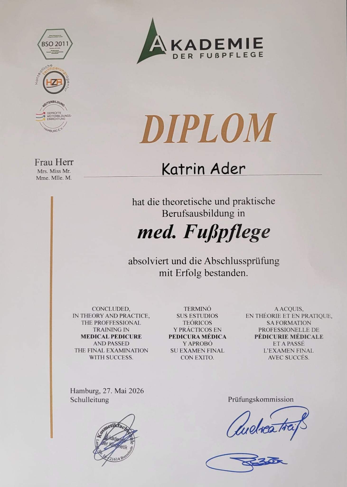

Mobil & flexibel für Sie in Tangstedt und Umgebung
Mit meiner neuen Qualifikation und dem offiziellen Diplom freue ich mich darauf, Ihnen eine professionelle, medizinische und einfühlsame Fußpflege anzubieten, um Ihr Wohlbefinden zu steigern.
Ich lege höchsten Wert auf Hygiene und biete Ihnen eine fachgerechte Behandlung ganz bequem bei Ihnen zu Hause – völlig stressfrei.

Fachgerechte und medizinische Behandlung Ihrer Füße, exakt angepasst auf Ihre Bedürfnisse.
Als qualifizierte Ansprechpartnerin bin ich speziell für die sensible Pflege von Diabetiker-Füßen ausgebildet.
Individuelle Behandlung inklusive ausführlicher Beratung und Erstellung von persönlichen Pflegeplänen.
Ihre Gesundheit und Ihr Wohlbefinden stehen bei mir im Mittelpunkt. Bei jeder Behandlung lege ich allergrößten Wert auf die strikte Einhaltung aller Hygiene-Richtlinien, um Ihre Sicherheit zu gewährleisten.
Melden Sie sich gerne direkt telefonisch oder per E-Mail, um einen flexiblen Termin bei Ihnen zu Hause zu vereinbaren.